Hero｜獨立入口世界
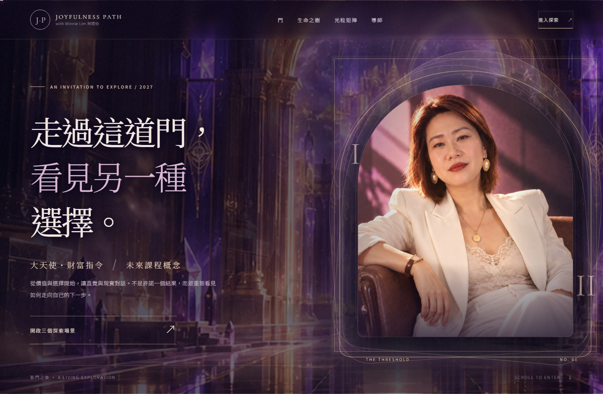
1440 × 900 · 真網頁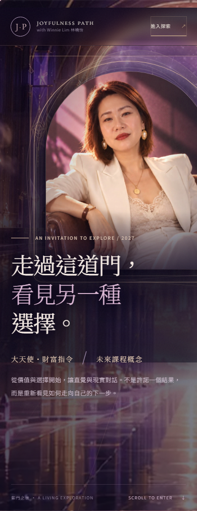
390 × 844 · 真網頁Threshold｜光門與米白層次
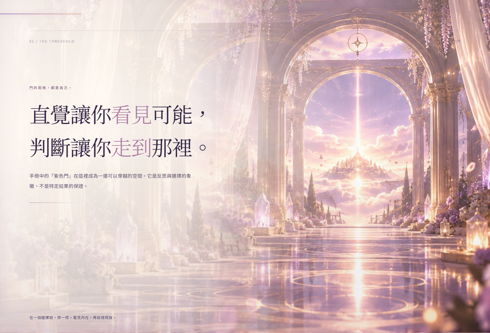
1440 × 900 · 真網頁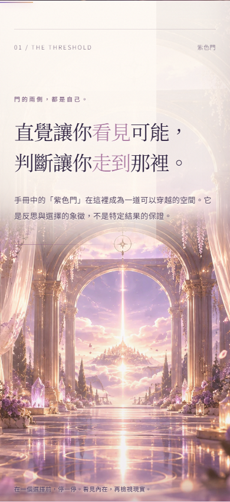
390 × 844 · 真網頁Tree｜真節點、立體建築、玻璃鑲邊
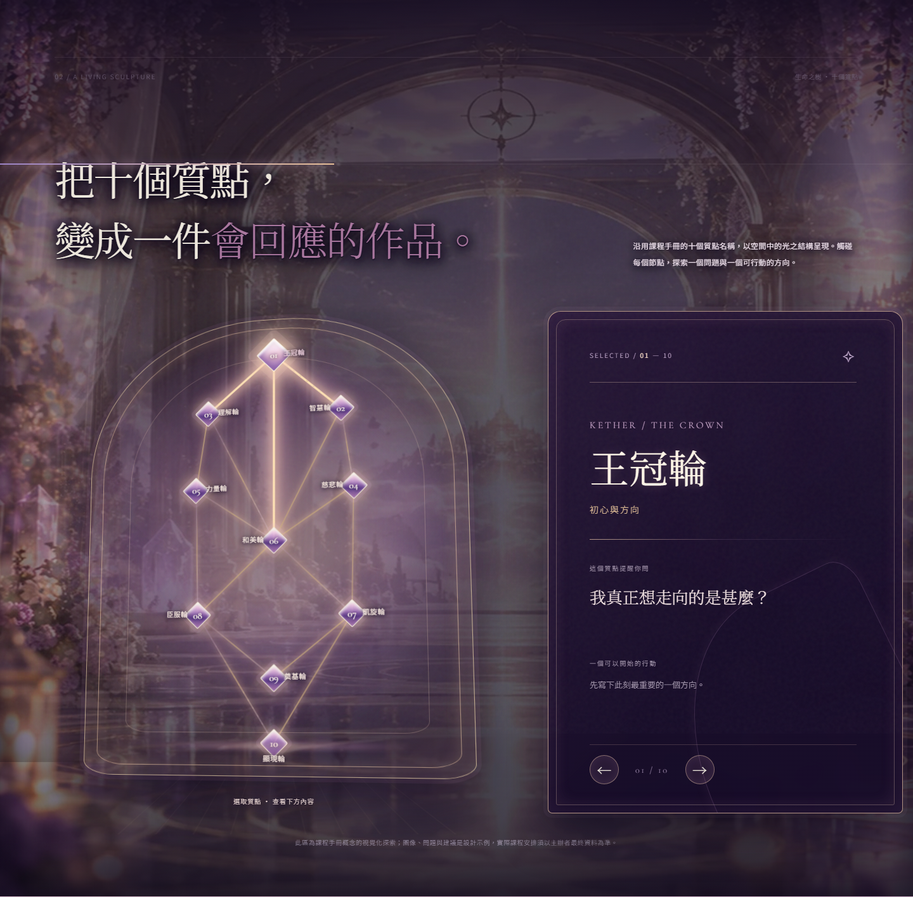
1440 × 900 · 真網頁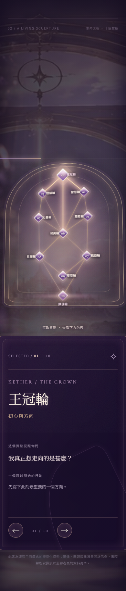
390 × 844 · 真網頁Matrix｜獨立晶體廳、真三軸
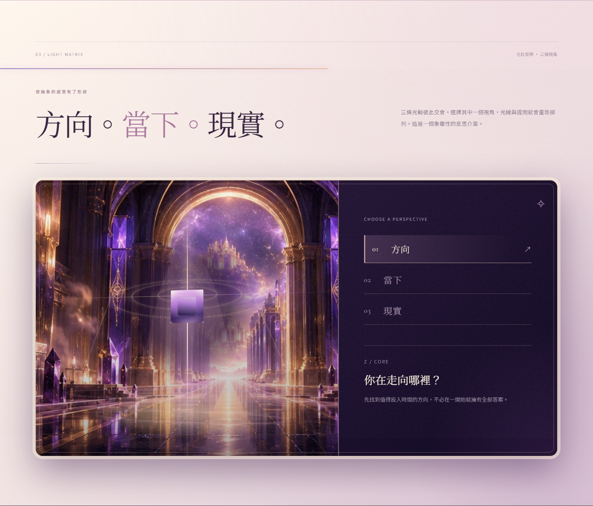
1440 × 900 · 真網頁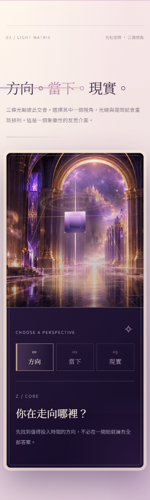
390 × 844 · 真網頁Winnie｜真肖像加雙層香檳金框
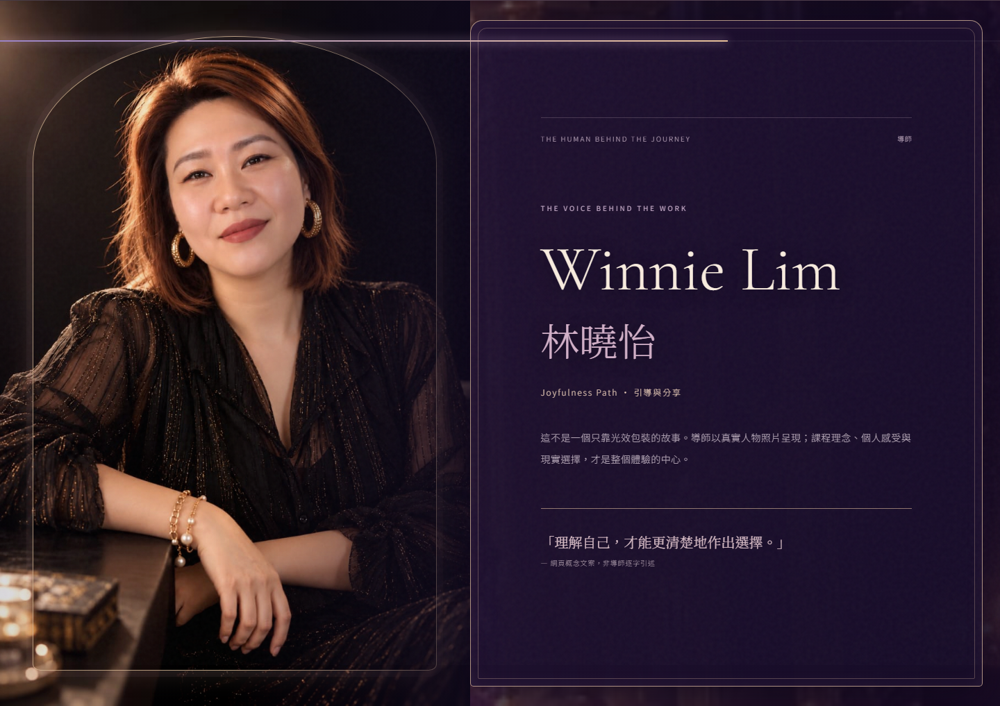
1440 × 900 · 真網頁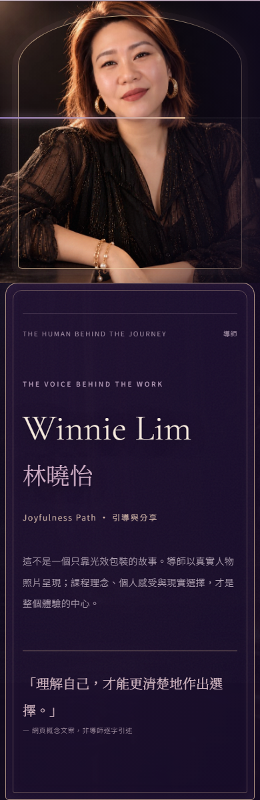
390 × 844 · 真網頁真實工作照片｜三幅玻璃展櫃
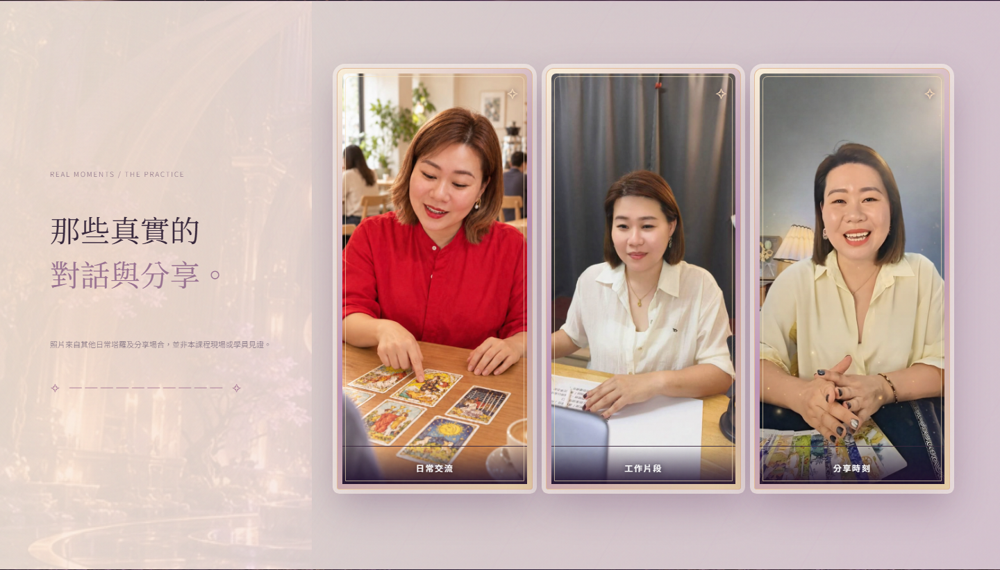
1440 × 900 · 真網頁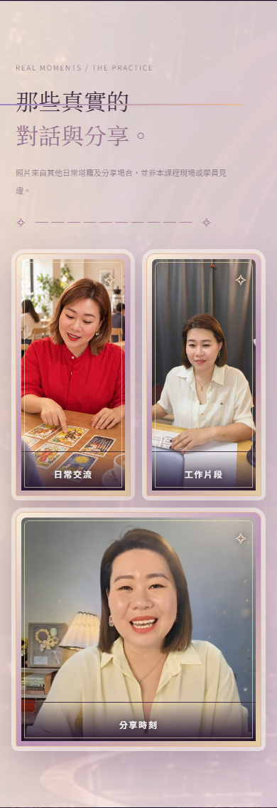
390 × 844 · 真網頁Closing｜獨立遠景收尾
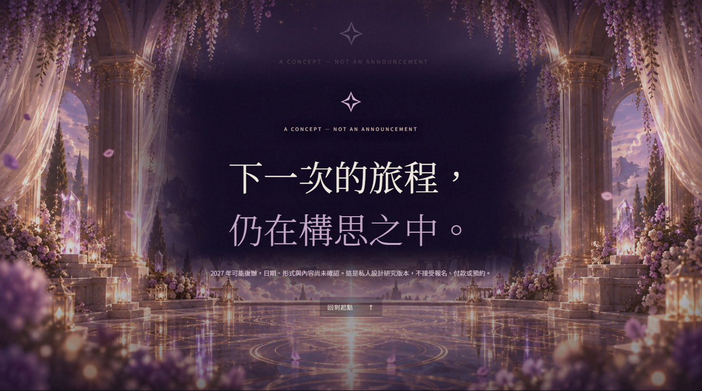
1440 × 900 · 真網頁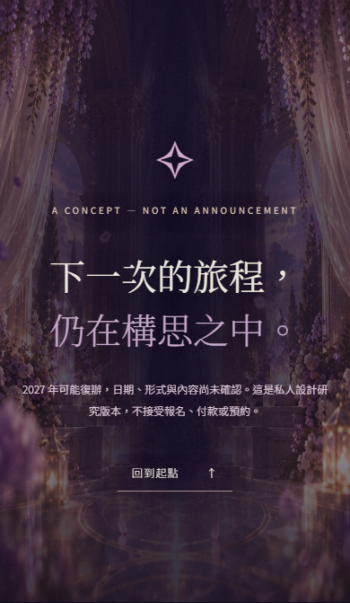
390 × 844 · 真網頁